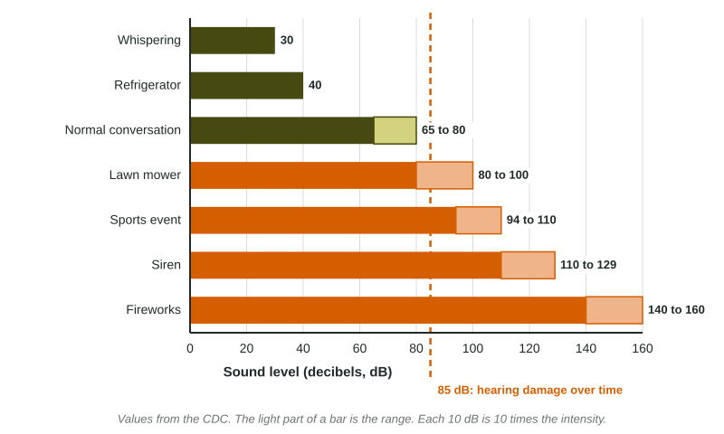

Noise Pollution
Noise pollution is sound that harms people or wildlife because of its level or timing.
Part 1 · Hook
Why this matters
Part 2 · Prerequisite check
Quick check before you start
1. Which part of an organism's environment is a sound?
- An abiotic factor
- A biotic factor
- A producer
- A decomposer
Show the answer
Sound, like light and temperature, is a nonliving (abiotic) part of the environment.
- Correct: An abiotic factor:
- A biotic factor:
- A producer:
- A decomposer:
2. What happens to an organism outside its range of tolerance?
- It is stressed and may not survive or reproduce
- It grows faster
- It always moves to a new biome
- Nothing changes
Show the answer
Outside its tolerance range an organism is stressed, and its survival and reproduction fall.
- Correct: It is stressed and may not survive or reproduce:
- It grows faster:
- It always moves to a new biome:
- Nothing changes:
Part 3 · See it
See it first

Part 4 · Step by step
How it works, step by step
- Traffic, aircraft, construction, industry and ships make loud or constant soundnoise reaches people and wildlife at high levels or at the wrong times
- Sound above about 85 dB for long periodshearing is damaged in people and animals
- Noise masks the sounds animals use to communicate, hunt and avoid predatorsmating, feeding and migration are disrupted
- Animals avoid or fail to breed in noisy areaspopulations near roads, airports and shipping lanes fall
Part 5 · Key ideas
Key ideas
- Noise pollution is sound at levels or times that harm people or wildlife. Sources: traffic, aircraft, construction, industry, ships and seismic surveys.
- Sound is measured in decibels (dB), a logarithmic scale: each 10 dB is 10 times the intensity. Long exposure at or above 85 dB can damage hearing.
- People: hearing loss, stress, poor sleep, high blood pressure. Wildlife: masked mating calls, disrupted migration and hunting, and stress, on land and in water.
- Solutions: barrier walls, quieter equipment and pavement, slower ships, hearing protection, and rules on hours and zones.
Part 6 · Misconception
A common mistake
The wrong idea: A sound at 100 dB is only a little louder than one at 80 dB, since 100 is close to 80.
What actually happens: Decibels are logarithmic. 20 dB more is two steps of 10, so the 100 dB sound has 100 times the intensity of the 80 dB sound.
Part 7 · Check yourself
Check yourself
Exam-style questions. Anything you miss goes into your review queue.
1. What is noise pollution?
- Any sound above 10 decibels in a city
- Vibration from earthquakes that damages buildings
- Radio waves from cell phone towers
- Sound loud or constant enough to cause harm
Show the answer
Noise pollution is sound at levels or times that harm people or wildlife, from traffic, aircraft, industry, construction and ships.
- Any sound above 10 decibels in a city: 10 dB is barely audible; it is the harm that defines noise pollution.
- Vibration from earthquakes that damages buildings: Earthquakes are natural events, not noise pollution in this sense.
- Radio waves from cell phone towers: Radio waves are not sound.
- Correct: Sound loud or constant enough to cause harm: Right: harm, not just loudness, defines it.
Model or diagram
Sound levels measured around a city school
2. Sounds at or above 85 dB can damage hearing over time. Which measured sounds are at or above that level?
- The low-flying jets, the loudest source
- The road work and the low-flying jets
- Recess and everything louder than it
- Lunch, recess and the road work
Show the answer
Road work (100 dB) and low-flying jets (110 dB) are above 85 dB. Recess on the playground (80 dB) is close but below it.
- The low-flying jets, the loudest source: Road work, at 100 dB, is also above 85 dB.
- Correct: The road work and the low-flying jets: Right: 100 and 110 dB are both above 85 dB.
- Recess and everything louder than it: Recess on the playground is 80 dB, below 85 dB.
- Lunch, recess and the road work: Lunch (75 dB) and recess (80 dB) are below 85 dB.
3. The decibel scale is logarithmic: each 10 dB step means 10 times the sound intensity. How does the 100 dB road work compare with the 80 dB playground at recess?
- It has 100 times the sound intensity
- It has 20 times the sound intensity
- It has 1.25 times the sound intensity
- It has 2 times the sound intensity
Show the answer
100 - 80 = 20 dB, two steps of 10, so the road work has times the intensity.
- Correct: It has 100 times the sound intensity: Right: 20 dB is two steps of 10, so 10 × 10.
- It has 20 times the sound intensity: 20 is the difference in dB, not the ratio. Each 10 dB is a factor of 10.
- It has 1.25 times the sound intensity: Dividing the decibel values ignores the logarithmic scale.
- It has 2 times the sound intensity: Two steps of 10 dB is 10 × 10, not 2.
4. Using the rule that each 10 dB means 10 times the intensity, how many times more intense is the 110 dB jet noise than the 80 dB playground at recess?
Type a number, then its unit (times). Scale words (2.5 million) and powers of ten (2.5 × 10^6) are read.
Show the answer
dB, three steps of 10, so
- Answer: 1000 times
Data
Songbirds near a new highway
| Distance from highway (m) | Traffic noise (dB) | Breeding songbird pairs per 10 ha |
|---|---|---|
| 50 | 72 | 4 |
| 200 | 62 | 9 |
| 400 | 54 | 15 |
| 800 | 45 | 18 |
| 1,600 | 38 | 19 |
5. Describe the relationship between distance from the highway and traffic noise.
- Noise rises as distance from the highway increases
- Noise is about the same at each distance
- Noise falls as distance from the highway increases
- Noise falls up to 400 m, then rises again
Show the answer
Noise falls as distance increases, from 72 dB at 50 m to 38 dB at 1,600 m.
- Noise rises as distance from the highway increases: The table shows noise dropping with distance.
- Noise is about the same at each distance: It ranges from 72 to 38 dB.
- Correct: Noise falls as distance from the highway increases: Right: from 72 dB near the road to 38 dB far away.
- Noise falls up to 400 m, then rises again: It keeps falling at 800 m and 1,600 m.
6. Which claim do the data best support?
- Songbirds prefer to nest within 50 m of a road
- Fewer songbirds breed where traffic noise is louder
- Traffic noise has no link to songbird breeding
- Songbirds make the highway quieter far from the road
Show the answer
Pairs rise from 4 to 19 as noise drops from 72 to 38 dB. Noise is likely one cause, though the road also brings lights, pollution and edge effects, so the data show a relationship, not proof.
- Songbirds prefer to nest within 50 m of a road: The fewest pairs, 4, are within 50 m.
- Correct: Fewer songbirds breed where traffic noise is louder: Right: the counts rise steadily as noise falls.
- Traffic noise has no link to songbird breeding: The counts change steadily with the noise.
- Songbirds make the highway quieter far from the road: Birds do not lower traffic noise; distance does.
7. Why could loud traffic noise lower songbird breeding near the road?
- Noise drowns out the songs that win mates
- Noise warms the air, so eggs overheat near the road
- Noise breaks down the insects that songbirds eat
- Noise makes the trees near the road grow more slowly
Show the answer
Songbirds attract mates and defend territories by singing. Noise masks their songs, so males find mates less often and pairs avoid noisy areas.
- Correct: Noise drowns out the songs that win mates: Right: masked songs mean fewer pairs form.
- Noise warms the air, so eggs overheat near the road: Sound does not noticeably warm the air.
- Noise breaks down the insects that songbirds eat: Sound does not break down insects.
- Noise makes the trees near the road grow more slowly: The direct effect is on the birds' communication, not on tree growth.
Part 8 · Summary
Summary
Part 9 · Up next
What comes next
Part 10 · Connections